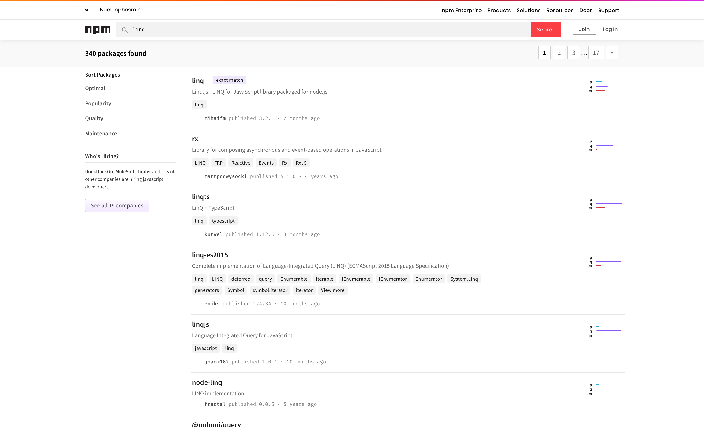

fromfrom
LINQ inspired library to transform sequences of data
@TomiTurtiainen | https://github.com/tomi
TampereJS | 7/11/2019
Motivation
How do you transform data in JS?
Here are some options...
Plain JavaScript
Array has filter, map,
reduce, but...
...no methods for more complicated tranforms
...Object, Map and Set don't
have them
...methods are not lazy
lodash
You can create a pipeline with _.chain(), but...
...it feels clumsy and hard to understand
...TypeScript support is not the best
...no support for Set, Map or other
Iterables
...it imports almost the entire library
LINQ
.NET way of transforming data from one source to another
Sort Finnish players by their score and select each player's name and score
Players
.Where(c => c.Country == "FI")
.OrderByDescending(c => c.Score)
.Select(c =>
new { c.Name, c.Score }
);
LINQ libraries
NPM already has 340 LINQ libraries, but...
...they are exact copies of LINQ
...method names are not JS friendly
...they lack support for certain types
fromfrom
Provide similar functionality to LINQ in JS friendly way
- Simple: Have a explicit and simple API
- Familiar: Use familiar function names from JS
- Small: No external dependencies
- Type safe: Written in TypeScript and has type definitions included
- Comprehensive: Support all native JS collections
- Fast: Use lazy evaluation and deferred execution
Demo
What?
"Enumerable sequences is a LINQ inspired library to transform sequences of data."
[{ "id":1, "name": "John", "gender": "M", "score":941 }
,{ "id":2, "name": "Luke", "gender": "M", "score":645 }
,{ "id":3, "name": "Jane", "gender": "F", "score":525 }
,{ "id":4, "name": "Mark", "gender": "M", "score":893 }
,{ "id":5, "name": "Mary", "gender": "F", "score":886 }]
[{ "id":5, "display": "Mary (F)", "score":886 }
,{ "id":3, "display": "Jane (F)", "score":525 }
,{ "id":1, "display": "John (M)", "score":941 }
,{ "id":4, "display": "Mark (M)", "score":893 }
,{ "id":2, "display": "Luke (M)", "score":645 }]
Demo
Why?
JS support for collections is lacking
Only Array has some, but only basic ones
Set and Map lack any transform methods
"Already 311 LINQ packages in NPM"
Exact copies of LINQ
Method names not JS friendly
Lack support for certain types (objects, Maps)
"What about lodash?"
I want a banana, not a gorilla holding the banana
Chaining feels clumsy and implicit
How?
Decorator pattern & Iteration protocols
Decorator pattern
Dynamically add behavior to existing objects

Iteration protocols
Iterable protocol
interface Iterable<T> {
[Symbol.iterator](): Iterator<T>;
}
Allows sequence to be looped over in a
for..of construct
Array, Set and
Map implement Iterable
Iterator protocol
interface IteratorResult<T> {
done: boolean;
value: T;
}
interface Iterator<T> {
next(value?: any): IteratorResult<T>;
return?(value?: any): IteratorResult<T>;
throw?(e?: any): IteratorResult<T>;
}
Defines a standard way to produce a sequence of values
Iterator example
const arr = [1, 2];
const iterator = arr[Symbol.iterator]();
iterator.next();
// { value: 1, done: false }
iterator.next();
// { value: 2, done: false }
iterator.next();
// { value: undefined, done: true }